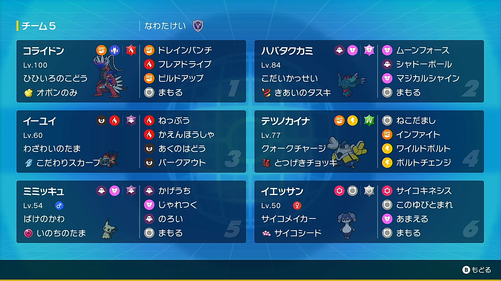

2023年3月14日
【SV・パルデアプロローグ】カミイーユイコライドン
はじめに
なわたけいです。あまりいい成績ではないのですが、コライドンについての記事が少なくなりそうなので記事を書いてみました。参考程度にどうぞ。
構築経緯
まず伝説枠としてビルドアップ+ドレインパンチが面白そうなコライドンを採用することに。晴れによって強化され、お互い攻めの相性に優れたハバタクカミとイーユイも採用。
そして補完として、色んなポケモンに強くねこだましが便利なテツノカイナを採用。
この4匹は仲間大会で使ってみて間違いない強さだったので使い続けることにしました。
残りは少し仲間大会で試したところ、ハバタクカミとイーユイが苦手とする先制技を防げ、このゆびとまれでミライドンなどに対して行動保証を稼げるイエッサンが強そうだったので採用することに。
もう1匹が決まらなかったのですが、ハバタクカミ+イーユイのミラーと寿司構築にミミッキュが強めに出れるのではないかと思い、本番ぶっつけで採用することにしてみました。
個別解説
 コライドン コライドン |
ひひいろのこどう |
| オボンのみ | テラス:ほのお |
| 207(252)-156(4)-135-94-120-205(252) | |
| ドレインパンチ | フレアドライブ |
| ビルドアップ | まもる |
| H:いろいろ耐えたいので全振り 炎テラス時は珠ミライドンの イナズマドライブが乱数75% |
|
| S:S135族は激戦区なので 全振りしてミラーで勝てるように |
|
ビルドアップを積んだときの性能は高く、相手のコライドンの珠アクセルドライブを食らっても12.8%の乱数2発で、ドレインパンチも合わさることで単純なミラーで負けることはほぼありません。
フレアドライブはテラスタル時は非常に強力で、HBイエッサンを乱数でもっていくぐらいのパワーがあります。
ただし、テラスタルしてないときのタイプ耐性は劣悪で、特にミライドンがマジカルシャイン、コライドンがドラゴン技を使ってくるため、テラスタルをしない選択肢はほぼありません。
そのため、地面技に弱いので相手の地面枠には注意したいところです。
 ハバタクカミ ハバタクカミ |
こだいかっせい |
| きあいのタスキ | テラス:フェアリー |
| 131(4)-67-75-155-155-205(252) | |
| ムーンフォース | シャドーボール |
| マジカルシャイン | まもる |
| CSぶっぱ | |
高い特防を持ちますが、このルールではミライドンにワンパンされてしまうのでタスキ持ちにしました。
火力補強がないためあまり火力はなかったのですが、フェアリー弱点への圧力と、タスキの行動保証を活かしたダメージ稼ぎが魅力のポケモンでした。
 イーユイ イーユイ |
わざわいのたま |
| こだわりスカーフ | テラス:ゴースト |
| 131(4)-90-100-205(252)-140-152(252) | |
| ねっぷう | かえんほうしゃ |
| あくのはどう | バークアウト |
| CSぶっぱ 準速と最速の間で抜いておきたい ポケモンがいないのでひかえめ準速 |
|
特に、相手の先制技を潰し、天候を晴れにしたときの制圧力は驚異的で、この構築の勝ち筋の1つでした。
テラスタイプがゴーストなのはしんそくを無効化するためのものでした。(が、イエッサンがいたので結局使わず)
 テツノカイナ テツノカイナ |
クォークチャージ |
| とつげきチョッキ | テラス:くさ |
| 229-211(252)-128-63-120(252)-70 | |
| ねこだまし | インファイト |
| ワイルドボルト | ボルトチェンジ |
| ADぶっぱ | |
ミライドンは大概テラスタイプがフェアリーなので相手する場合はテラスタル必須です。
選出回数は一番少なかったので、ひょっとしたら入れ替えた方がいいかもしれないです。
 イエッサン♀ イエッサン♀ |
サイコメイカー |
| サイコシード | テラス:ノーマル |
| 177(252)-67-128(252)-115-126(4)-105 | |
| サイコキネシス | このゆびとまれ |
| あまえる | まもる |
| HBぶっぱ | |
耐久の低いイーユイ、ビルドアップを積みたいコライドンにとって非常に大切な存在です。
あまえるは寿司構築とグレンアルマへの対策でしたが、結局見かけることはありませんでした。
 ミミッキュ ミミッキュ |
ばけのかわ |
| いのちのたま | テラス:ゴースト |
| 131(4)-156(252)-100-63-125-148(252) | |
| かげうち | じゃれつく |
| のろい | まもる |
| ASぶっぱ | |
全体的に火力の高い環境で安定した行動保証を持てることは非常に重要です。
ハバタクカミ+イーユイに強く、こちらのイーユイのねっぷう+ミミッキュのかげうちでハバタクカミを倒すことができます。(まもるを読んだ場合はイーユイにじゃれつくすれば倒せます)
のろいは寿司対策及び積み対策でしたがやはり当たりませんでした。
選出・動き
初手:ハバタクカミ、イーユイ、ミミッキュのどれか後発:コライドン+イーユイ、イエッサン、テツノカイナのどれか
イエッサンとコライドンは初手に出しません。イエッサンは基本交代出しで先制技などから守ります。コライドンは受け出しが無理なので死に出しが基本です。
イーユイは初手に出しても交代して、晴れからのねっぷう無双を狙ったりもします。
ミミッキュはおもにハバタクカミ+イーユイやカイリュー+パオジアンに出していきます。
戦績
11勝/12戦一戦だけ、ワタッコ入りのコライドン構築に当って負けました。ようりょくそ持ちに対する対策が全く無かったのがよくなかったと思います…
総括
おそらく今後このルールで戦うことはないと思いますが、今後のルールにおいて参考してくださいますとありがたいです。質問や苦情はこちらまでお願いします。 Twitter マシュマロ お問い合わせフォーム